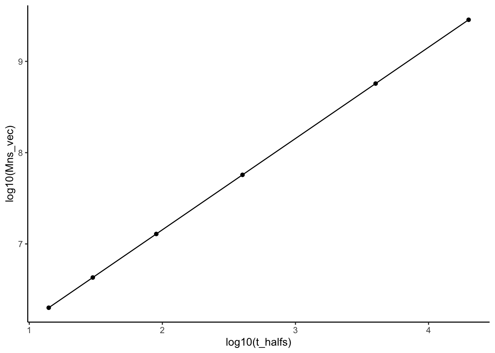
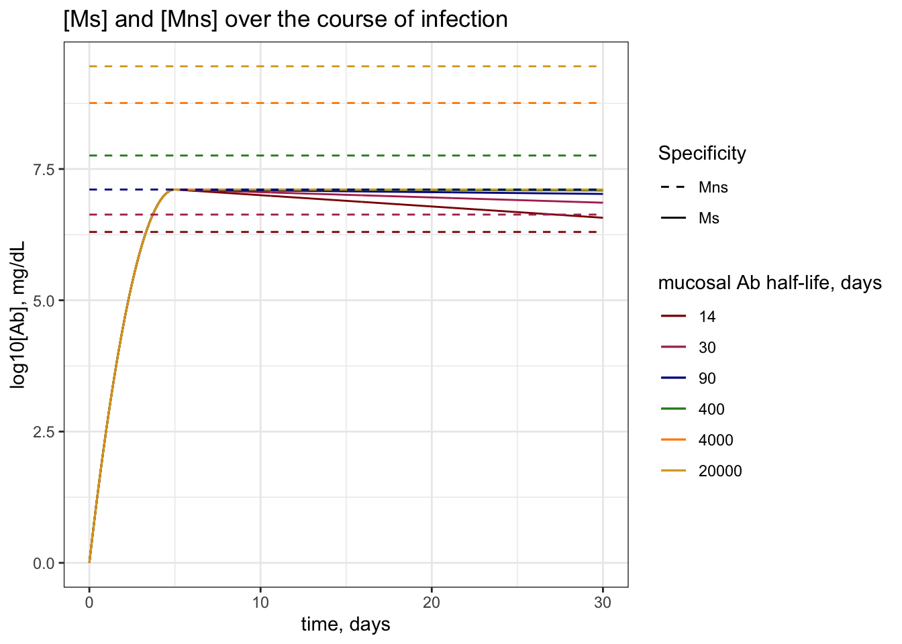
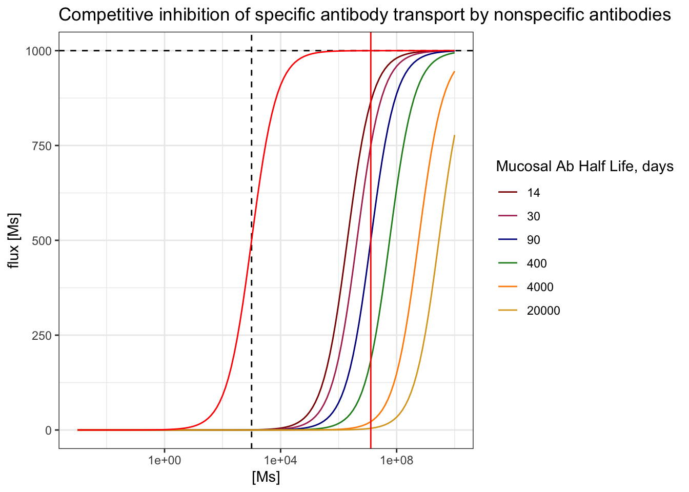
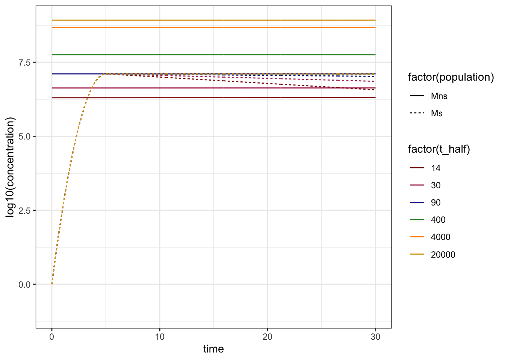

── Conflicts ────────────────────────────────────────── tidyverse_conflicts() ──
✖ dplyr::combine() masks gridExtra::combine()
✖ dplyr::filter() masks stats::filter()
✖ dplyr::lag() masks stats::lag()
ℹ Use the conflicted package (<http://conflicted.r-lib.org/>) to force all conflicts to become errors
#install.packages("deSolve")library(deSolve)#load functionssource(here("code", "functions", "functions.R"))#choose plotting colorsmy_colors =c("darkred", "maroon", "darkblue", "forestgreen", "darkorange", "goldenrod") #choose color rangenum_colors =length(my_colors) #set number of colors needed for plottingmy_colors =colorRampPalette(my_colors)(num_colors) #increase number of colors staying in color range
Objective
In this document, we evaluate how long-lived IgA antibody titers in the respiratory mucosa interfere with the transport of specific IgA antibodies to the site of infection. We explore the steady state concentration of non-specific antibodies explicitly considering the flux of IgA out of the mucosa.
How to measure efficiency
We might be interested in the effect of competition on a few different quantities:
The concentration of specific antibody that makes it to the lumen, \(L_s\), over time, whose dynamics are described by:
\[
\frac{dL_s}{dt} = k_2R_s - d_L L_s
\]
The relative proportion of transport proteins carrying specific antibody out of the total number of transport proteins carrying antibody, given by:
\[
f_s = \frac{R_s}{R_s + R_{ns}}
\]
The efficiency of transport of specific antibody relative to the amount of mucosal antibody, given by:
\[
\epsilon_s = \frac{k_2R_s}{M_s}
\]
These might all be plotted as a function of time (x-axis) with various lines describing the dynamics given different \(d_\mu\).
However, we might also want to plot a heatmap of the effect of saturation on the response given changes in \(d_\mu\) and strength of competition (either \(K_M\) or \(V_{max}\) changing). For these heatmaps, we will need a single value to report. My suggestion is either to report one of these values at the peak of the specific response (\(t_{peak}\)), or to plot the integral of one of these values up until the peak of the response.
I will make that decision after seeing the results of the dynamics for each measurement!
Parameters
Below, we define the parameters required for the model IgA_competition.model in code\functions\function.r. This model is described in code\simulations\1_primary_responses_Outline.qmd. Importantly, we define a vector of \(d_\mu\) to identify the effect of larger and larger concentration of total IgA on inhibitin the transport of newly generated IgA to a novel pathogen.
Antibody concentrations
First, we define how we vary the concentration of nonspecific antibody \(M_{ns}\) with respect to the dynamics of specific antibody \(M_s\) increase and decay during infection.
Importantly, the steady state concentration of \(M_{ns}\) is not simply the steady state of \(\frac{dM_{ns}}{dt} = c - d_\mu\) which gives \(\frac{c`}{d_\mu}\), because antibody is constantly being transported into the lumen. Instead, the equilibrium concentration of \(M_{ns}\) should be derived as the positive solution to the steady state of the following system of ODEs:
Below, we plot the dependence of \(M_{ns}^{*}\) on the decay rate (\(d_\{mu}\)).
First, we define the function to calculate \(M_{ns}^{*}\):
#define steady state concentration of mnsss_Mns =function(d_mu) { num =-(d_mu*k2 + k1*k2*RT - c*k1) +sqrt((d_mu*k2 + k1*k2*RT - c*k1)^2+4*d_mu*k1*c*k2) den =2*d_mu*k1return(num / den)}
# transportVmax =10^3# order of magnitude of peak response # we might vary this laterk2 =1/(2/24) #rate of transport - 1/T of transport which is 1/2hours or 1/2/24ths of a dayRT = Vmax/k2 #total number (concentration) of receptors, Vmax = k2RTk1 = k2/10^3#k2/min(Mns_vec) #rate of antibody binding such that KM is order of magnitude of min of the MnsKM = k2/k1 #checking KM# dynamics in the lumen t_half_L =3#half life of antibodies in the lumen, in daysd_L =log(2)/t_half_L #decay rate in the lumen# steady state nonspecific antibodiesc =1*10^5#rate of influx of nonspecific IgA, Ab/time - comes from pb/dA - in mg/dl per dayt_halfs =c(14,30,90,400, 4000, 20000) #half lives of mucosal ab in days - 2 weeks, 1 month, 3 months, 1 year, 10 years, 50 yearsd_mus =log(2)/t_halfs #half lives in daysnames(d_mus) = t_halfs
### generate ss by d_muMns_vec =sapply(d_mus, function(d_mu){ss_Mns(d_mu = d_mu)}) #calculate mns for each dmusignif(Mns_vec,1)
##plotplot =ggplot() +geom_point(aes(x =log10(t_halfs), y =log10(Mns_vec))) +geom_line(aes(x =log10(t_halfs), y =log10(Mns_vec))) +theme_classic()#print to viewer print(plot)

### we might also want to see how this depends on vmax...
We would like to plot the specific antibody response with respect to the steady state concentration of non-specific antibodies. Here, the generation and decay of specific antibody in the mucosa (not considering transport) looks like:
# generation of new responseAp = Mns_vec["90"] #peak antibody titer will be the same as Mns for 90 days#initial ab titerA0 =1# initial specific ab concentrationtp =5#time of peak titer -- days# will be calculated when iterating through d_mu#r0 = (2*log(Ap/A0)/tp) + d_mu #initial/greatest exponential expansion rate#alpha = (r0 - d_mu)/tp # rate of decay of exponential growth rate
### plot Ms vs Mns over timeMab_titers =lapply(t_halfs, function(t_half){# setting t.half dependent parms for nonspecific population d_mu =log(2)/t_half #set d_mu Mns =ss_Mns(d_mu = d_mu) # steadys state nonspecific# setting t.half dependent parms for specific abs r0 = (2*log(Ap/A0)/tp) + d_mu #initial/greatest exponential expansion rate alpha = (r0 - d_mu)/tp # rate of decay of exponential growth rate### deSolve for specific ab over time# parms list params =list( # parameter listr0 = r0, A0 = A0,Ap = Ap,alpha = alpha,tp = tp,d_mu = d_mu )# initial conditions Ms_init = A0 # starting antibody titer init_cond =c("Ms"= Ms_init)# numerical solver parameters Tmax =30# total days points_per_day =24# every hour# solve soln =as.data.frame(ode(y = init_cond, times =seq(0, Tmax, length.out = Tmax*points_per_day), primary_response.model, parms = params)) %>%cbind(.,Mns, t_half)}) %>%do.call(rbind, .) #concatenates all dfs from lapply list into a single df rowwise### Plotplot =ggplot() +geom_line(data = Mab_titers, aes(x = time, y =log10(Ms), group =factor(t_half), col =factor(t_half), linetype ="Ms")) +geom_line(data = Mab_titers, aes(x = time, y =log10(Mns), group =factor(t_half), col =factor(t_half), linetype ="Mns")) +scale_color_manual(values = my_colors) +scale_linetype_manual(values =c("Ms"="solid", "Mns"="dashed")) +labs(x ="time, days", y ="log10[Ab], mg/dL", col ="mucosal Ab half-life, days", linetype ="Specificity", title ="[Ms] and [Mns] over the course of infection") +theme_bw()#print to viewerprint(plot)

I also explicitly plot the integral of the ode used to generate the specific response, but i’ve hidden that for now because its identical (which is what we wouldve hoped for!)
### plot Ms vs Mns over timeMab_titers =lapply(t_halfs, function(t_half){# setting t.half dependent parms for nonspecific population d_mu =log(2)/t_half #set d_mu Mns =ss_Mns(d_mu = d_mu) # steadys state nonspecific# setting t.half dependent parms for specific abs r0 = (2*log(Ap/A0)/tp) + d_mu #initial/greatest exponential expansion rate alpha = (r0 - d_mu)/tp # rate of decay of exponential growth rate# set time vector parms Tmax =30# total days points_per_day =24# every hour time =seq(0, Tmax, length.out = Tmax*points_per_day) #generate time vector### apply to calculate soln =data.frame("time"= time, "Ms"=sapply(time, function(t){if(t<=tp){A0*exp((r0 - d_mu)*t - (alpha/2)*t^2)}else {Ap*exp(-d_mu*(t-tp))} }))# solve soln = soln %>%cbind(.,Mns, t_half)}) %>%do.call(rbind, .) #concatenates all dfs from lapply list into a single df rowwise### Plotplot =ggplot() +geom_line(data = Mab_titers, aes(x = time, y =log10(Ms), group =factor(t_half), col =factor(t_half), linetype ="Ms")) +geom_line(data = Mab_titers, aes(x = time, y =log10(Mns), group =factor(t_half), col =factor(t_half), linetype ="Mns")) +scale_color_manual(values = my_colors) +scale_linetype_manual(values =c("Ms"="solid", "Mns"="dashed")) +labs(x ="time, days", y ="log10[Ab], mg/dL", col ="mucosal Ab half-life, days", linetype ="Specificity", title ="[Ms] and [Mns] over the course of infection") +theme_bw()#print to viewerprint(plot)
When we solve numerically and plot the concentration of \(M_s\), it will be smaller, due to flux outside. But we wanted the peak of the response generated to match the order of magnitude of the steady state nonspecific titer.
Effect of competition
Below, we plot the effect of pre-existing antibody titers on the flux of specific antibodies across the lumen. We do so fist by showing how the curve of flux by the concentration os \(M_s\) changes in the presence of increase \(M_{ns}\).
#set concentrations of Ms for x axis concentrations =10^seq(-3, 10, by =0.1)### plot flux vs [Ms] given each Mns flux_df =lapply(t_halfs, function(t_half){# set d_mu and Mns d_mu =log(2)/t_half Mns =ss_Mns(d_mu = d_mu)#calculate flux flux =sapply(concentrations, function(Ms){ Vmax*Ms/((k2/k1) + Mns + Ms) }) %>%cbind("Ms"= concentrations, "flux"= ., "t_half"= t_half) %>%as.data.frame() }) %>%do.call(rbind, .) %>%as.data.frame() ## plotplot =ggplot() +geom_line(data = flux_df, aes(x = (Ms), y = flux, group =factor(t_half), col =factor(t_half))) +geom_hline(yintercept = Vmax, linetype ="dashed") +geom_vline(xintercept = (k2/k1), linetype ="dashed") +geom_vline(xintercept = (Ap), color ="red") +geom_line(aes(x = concentrations, y =sapply(concentrations, function(Ms){Vmax*Ms/(KM+Ms)})),inherit.aes =FALSE,color ="red") +scale_x_continuous(trans ="log10") +scale_color_manual(values = my_colors) +labs(x ="[Ms]", y ="flux [Ms]", color ="Mucosal Ab Half Life, days", title ="Competitive inhibition of specific antibody transport by nonspecific antibodies") +theme_bw()# print to viewerprint(plot)

The horizontal dashed line shows the greatest possible transport rate, \(V_{max}\), the vertical dashed line shows the 50% saturation concentration given \([M_s]\) only, or \(K_M\), and I have added a red vertical line to show the peak concentration of \(M_s\) generated over an infection.
Dynamics as a function of mucosal antibody half-life
We would like to show how high concentrations of nonspecific antibody in the mucosa interfere with the transport of specific antibody across the mucosa and into the lumen, the site of infection.
Concentration of specific antibody, \(L_s\) in the lumen over time
Here, we numerically solve for the concentration of nonspecific and specific antibody in the mucosa over time:
### parameters for competition model ## define half-lifest_halfs =c(14,30,90,400, 4000, 20000) #half lives of mucosal ab in days - 2 weeks, 1 month, 3 months, 1 year, 10 years, 50 years### define initial conditions and parms# initial conditions Ms_init =0# starting antibody titer Mns_init =0 Rs_init =0 Rns_init =0 Ls_init =0 Lns_init =0### numerical simulation parmsTmax_ss =10000points_per_day_ss =1Tmax =30points_per_day =24### deSolve soltionsss_solns =lapply(t_halfs, function(t_half){ # half lives in days############ solve for steady state concentrations ################### init_cond =c("Ms"=0, "Mns"= Mns_init, "Rs"=0, "Rns"=0, "Ls"=0, "Lns"= Lns_init)### set parms d_mu =log(2)/t_half #decay rate per day# As list params =list( #setting A# nonspecific ssd_mu = d_mu, # plasma cell decay rate per dayc = c, # total antibody production rate per day#generation of new responsesAp = Ap, # peak antibody titerA0 = A0, # intial antibody titertp = tp, # time of peak response, daysr0 = (2*log(Ap/A0)/tp) + d_mu, #initial/greatest exponential expansion ratealpha = (((2*log(Ap/A0)/tp) + d_mu) - d_mu)/tp, # rate of decay of exponential growth rate# transportk2 = k2, # trancytosis rateRT = RT, # total number of receptorsk1 = k1, # ab binding rate# lumend_L = d_L #decay rate in the lumen )# ode solve for steady state without specific response (to account for transport of nonspecific to lumen) init_cond =as.data.frame(ode(y = init_cond, times =seq(0, Tmax_ss, length.out = Tmax_ss*points_per_day_ss), IgA_competition.model, parms = params)) %>%tail(.,1) %>%select(!time) %>%unlist(.)############## course of infection ###################### init_cond["Ms"] = A0 # set specific antibody to increase soln =as.data.frame(ode(y = init_cond, times =seq(0, Tmax, length.out = Tmax*points_per_day), IgA_competition.model, parms = params)) %>%cbind(., t_half) return(soln)}) %>%do.call(rbind, .) %>%pivot_longer(cols =!c(time, t_half),names_to ="population",values_to ="concentration") %>%as.data.frame()#plot spectific responses in the lumenplot =ggplot() +geom_line(data = ss_solns %>%filter(population %in%c("Mns", "Ms")), aes(x = time, y =log10(concentration), group =interaction(factor(t_half), population), color =factor(t_half), linetype =factor(population))) +scale_y_continuous(limits =c(-1,NA)) +scale_color_manual(values = my_colors) +theme_bw()# print to viewerprint(plot)

And now we want to see what happens in the lumen:
#plot spectific responses in the lumenplot =ggplot() +geom_line(data = ss_solns %>%filter(population %in%c("Lns", "Ls")), aes(x = time, y =log10(concentration), group =interaction(factor(t_half), population), color =factor(t_half), linetype = population)) +scale_y_continuous(limits =c(-1,NA)) +scale_color_manual(values = my_colors) +theme_bw()# print to viewerprint(plot)